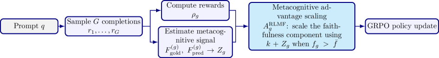
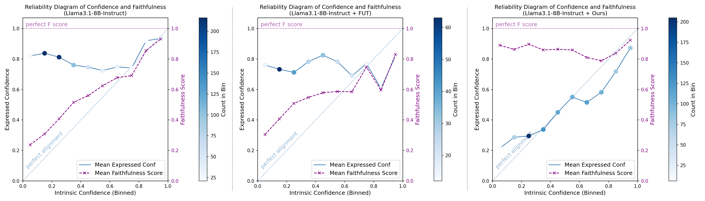
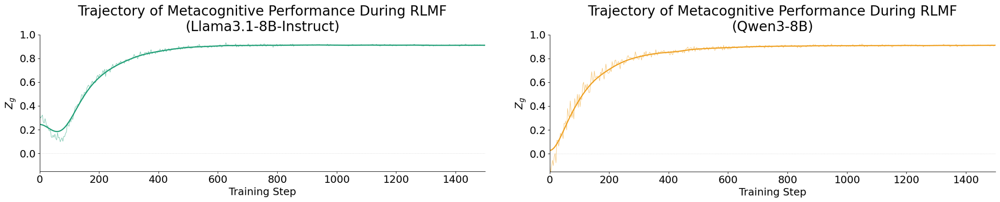

Yale & Google turn a model's own metacognition into the RL training signal. The goal is faithful calibration — making a model's expressed confidence match its internal confidence (not just its empirical accuracy). RLMF modifies the GRPO advantage: boost a completion's faithfulness reward by how well the model predicted its own faithfulness. A small open model calibrated this way beats GPT-5 / Gemini-3.1-Pro on faithful calibration, and RLMF beats standard RL by up to 63%. Yale와 Google이 모델 자신의 메타인지를 RL 학습 신호로 바꾼다. 목표는 충실한 캘리브레이션(faithful calibration) — 모델이 표현하는 확신을 (경험적 정확도가 아니라) 내부 확신에 맞추는 것. RLMF는 GRPO advantage를 수정한다: 어떤 완성의 충실도 보상을, 모델이 자기 충실도를 얼마나 잘 예측했는지로 증폭. 이렇게 캘리브레이션한 작은 오픈 모델이 faithful calibration에서 GPT-5 / Gemini-3.1-Pro를 이기고, RLMF는 표준 RL을 최대 63% 앞선다.
Factual: expressed confidence matches empirical accuracy (right as often as you claim). Faithful: expressed confidence matches the model's own internal belief (you say what you actually believe). A model can be factually calibrated yet unfaithful.Factual: 표현 확신이 경험적 정확도와 일치(말한 만큼 맞음). Faithful: 표현 확신이 모델 자신의 내부 믿음과 일치(믿는 대로 말함). factual calibration인데 unfaithful일 수 있다.
The ability to monitor and regulate one's own cognition. Thesis: a model that can accurately judge its own performance is better positioned to improve it — so the quality of self-judgment becomes a training signal.자기 인지를 모니터·조절하는 능력. 논지: 자기 성능을 정확히 판단하는 모델이 그걸 개선하기 유리하다 — 그래서 자기 판단의 품질이 학습 신호가 된다.
Group-Relative Policy Optimization — sample a group of completions per prompt, advantage = each completion's reward minus the group mean. RLMF modifies this advantage (and drops the usual std-normalization).Group-Relative Policy Optimization — 프롬프트마다 완성 그룹을 샘플, advantage = 각 완성 보상 − 그룹 평균. RLMF가 이 advantage를 수정(보통의 std 정규화는 제거).
Z_g = 1 − (F_pred − F_gold)² ∈ [0,1]. F_gold = how faithfully calibrated the completion actually is; F_pred = the model's self-prediction of that. Z_g=1 = perfect self-awareness.Z_g = 1 − (F_pred − F_gold)² ∈ [0,1]. F_gold = 완성이 실제로 얼마나 충실히 캘리브레이션됐나; F_pred = 그에 대한 모델의 자기 예측. Z_g=1 = 완벽한 자기 인식.
The FC metric: mean faithfulness across equal-mass intrinsic-confidence bins (0–1, higher=better). The star version removes the sparse-bin bias that penalized models with a narrow confidence range.FC 지표: 등질량 내부 확신 구간에 걸친 평균 충실도(0~1, 높을수록 좋음). 별표 버전은 확신 범위가 좁은 모델을 벌하던 희소 구간 편향을 제거.
RL from Internal Feedback (prior work): uses the model's own output confidence as reward — helps early but degrades over training. RLMF operates one level above (metacognition about that confidence) and avoids the decay.RL from Internal Feedback(선행): 모델 자신의 출력 확신을 보상으로 — 초반엔 돕지만 학습이 진행되며 나빠짐. RLMF는 한 층 위(그 확신에 대한 메타인지)에서 작동해 저하를 피한다.
LLMs are metacognitively deficient: they "hallucinate with high confidence, fail to recognize knowledge boundaries, and misrepresent their internal uncertainty." The paper targets faithful calibration (FC) and carefully separates it from the usual factual calibration: factual = expressed confidence tracks empirical accuracy; faithful = expressed confidence tracks the model's own intrinsic confidence.
LLM은 메타인지가 부족하다: "높은 확신으로 환각하고, 지식 경계를 인식하지 못하며, 내부 불확실성을 잘못 표현한다." 논문은 충실한 캘리브레이션(FC)을 겨냥하고 이를 보통의 factual calibration과 신중히 구분한다: factual = 표현 확신이 경험적 정확도를 따라감; faithful = 표현 확신이 모델 자신의 내부 확신을 따라감.
"FC is distinct from the more commonly studied problem of factual calibration, which aligns confidence with empirical accuracy: a model may appear factually calibrated yet remain misaligned with its internal beliefs."
— §1 · 원문 보기 (§1)
Prior FC methods fall short: MetaFaith (prompting) and FUT (SFT) address only linguistic uncertainty, generalize poorly, and tend to degrade accuracy/factual calibration. The paper's thesis is that metacognition is the missing lever — a model that can judge its own performance is positioned to improve it, so self-judgment quality should be the training signal.
기존 FC 방법은 부족하다: MetaFaith(프롬프트)와 FUT(SFT)는 언어적 불확실성만 다루고 일반화가 나쁘며 정확도/factual calibration을 떨어뜨리는 경향이 있다. 논문의 논지는 메타인지가 빠진 레버라는 것 — 자기 성능을 판단할 수 있는 모델이 그걸 개선하기 유리하니, 자기 판단 품질이 학습 신호가 되어야 한다.
"Since monitoring task performance and adapting behavior accordingly are central to metacognition, we posit that models capable of accurately judging their own performance are better positioned to improve it."
— Abstract · 원문 보기 (Abstract)
RLMF is a targeted modification to GRPO advantage computation, not a new reward from scratch. Per completion, the model is also asked to predict how faithfully calibrated its own confidences are (Fpred). The ground-truth faithfulness (Fgold) is computed; the squared gap gives a metacognitive scaling factor Zg ∈ [0,1] (Zg=1 = perfect self-awareness). The faithfulness component of a completion's advantage is boosted by (k + Z_g) — but only when it is above the group mean, and only for the faithfulness term (accessory rewards are untouched).
RLMF는 처음부터 새 보상을 만드는 게 아니라 GRPO advantage 계산을 겨냥한 수정이다. 완성마다 모델은 자기 확신들이 얼마나 충실히 캘리브레이션됐는지도 예측한다(Fpred). ground-truth 충실도(Fgold)를 계산하고, 제곱 격차가 메타인지 스케일 팩터 Zg ∈ [0,1]를 준다(Zg=1 = 완벽한 자기 인식). 완성 advantage의 충실도 성분을 (k + Z_g)로 증폭 — 단 그룹 평균 위일 때만, 그리고 충실도 항에만(부수 보상은 그대로).

RLMF: sample G completions → each gets a faithfulness reward; the model self-predicts its faithfulness (Fpred) → compare to Fgold → Zg → scale above-mean faithfulness advantages by (k+Zg).RLMF: G개 완성 샘플 → 각각 충실도 보상; 모델이 자기 충실도 자가예측(Fpred) → Fgold와 비교 → Zg → 평균 위 충실도 advantage를 (k+Zg)로 스케일. · Figure 2, arXiv:2606.32032
Intuition: a completion that is genuinely well-calibrated and whose model correctly knew it was well-calibrated gets the biggest advantage boost; being faithful by luck (poor self-judgment) is rewarded less. The same self-judgment scores also drive metacognitive data selection (pick the highest- and lowest-scoring examples), which beats random and active-learning selection. Finally a 2-stage pipeline: Stage 1 calibrates numerical self-reported confidence (SFT → RLMF); Stage 2 rewrites those numbers into linguistic hedges by targeted editing.
직관: 진짜로 잘 캘리브레이션됐고 그 사실을 모델이 정확히 알았던 완성이 가장 큰 advantage 증폭을 받는다; 운으로 충실한 경우(자기 판단 나쁨)는 덜 보상. 같은 자기 판단 점수가 메타인지 데이터 선택(최고·최저 점수 예시 선택)도 이끌며, 이는 랜덤·능동학습 선택을 이긴다. 끝으로 2단계 파이프라인: 1단계는 수치 자기보고 확신을 캘리브레이션(SFT → RLMF), 2단계는 그 수치를 표적 편집으로 언어적 헤지로 재작성.
"reinforcement learning with metacognitive feedback (RLMF), a paradigm to refine completion rankings during preference optimization based on the quality of a model's self-judgments of performance"
— Abstract · 원문 보기 (Abstract)
| Component구성요소 | Detail내용 |
|---|---|
| RL algorithmRL 알고리즘 | GRPO (trl), advantage std-normalization removed; group size G=32; KL β=0.1GRPO(trl), advantage std 정규화 제거; 그룹 크기 G=32; KL β=0.1 |
| Base models베이스 모델 | Qwen3-1.7B/4B/8B, Llama-3.1-8B-Instruct (LoRA r64/α64) |
| Training data학습 데이터 | SFT then RLMF on PopQA (2000 samples, 1500 steps)PopQA에서 SFT 후 RLMF(2000 샘플, 1500 스텝) |
| Intrinsic confidence judge내부 확신 판정 | Qwen3-32B, K=20 sampled responses, sentence-level NLIQwen3-32B, K=20 샘플 응답, 문장 단위 NLI |
| Benchmarks (10)벤치마크(10) | PopQA, SelfAware, SimpleQA, HaluEval, MMLU, SciQ, MATH, UMWP, ARC-C, SuperGLUE |
| Metrics지표 | cMFG* (faithful calibration, ↑), Accuracy (↑), Brier Score (factual calib., ↓)cMFG*(faithful calibration, ↑), 정확도(↑), Brier(factual calib., ↓) |
| Baselines베이스라인 | MetaFaith (prompting), FUT (SFT), standard RL (RLMF w/o Z_g), frontier Gemini-3.1-Pro / Gemini-3-Flash / GPT-5 (with MetaFaith prompting)MetaFaith(프롬프트), FUT(SFT), 표준 RL(Z_g 없는 RLMF), 프론티어 Gemini-3.1-Pro / Gemini-3-Flash / GPT-5(MetaFaith 프롬프트 포함) |
The reward is a weighted sum with faithfulness dominant (wfaith=12) plus format/accuracy/factual-calibration terms; weights are set so a faithfully-calibrated output always outscores an unfaithful one. Intrinsic confidence per sentence = the fraction of K=20 sampled generations that agree with it (an NLI judge) — the model's "true" belief strength.
보상은 충실도가 지배적(wfaith=12)이고 형식/정확도/factual-calibration 항을 더한 가중합이며, 충실히 캘리브레이션된 출력이 항상 그렇지 않은 것보다 높은 점수를 받도록 가중치를 설정. 문장별 내부 확신 = K=20 샘플 생성 중 그 문장에 동의하는 비율(NLI 판정) — 모델의 "진짜" 믿음 강도.
Main result (avg cMFG*↑ / Acc↑ / Brier↓ over 10 datasets):
| Method방법 | cMFG* ↑ | Acc ↑ | Brier ↓ |
|---|---|---|---|
| Llama-3.1-8B base | 0.60 | 0.31 | 0.33 |
| +MetaFaith (prompt) | 0.67 | 0.28 | 0.36 |
| +FUT (SFT) | 0.66 | 0.31 | 0.29 |
| +RL (no Z_g) | 0.77 | 0.40 | 0.20 |
| +RLMF | 0.84 | 0.41 | 0.26 |
| Qwen3-8B base | 0.54 | 0.55 | 0.31 |
| Qwen3-8B +RL (no Z_g) | 0.51 | 0.59 | 0.26 |
| Qwen3-8B +RLMF | 0.83 | 0.57 | 0.19 |
| GPT-5 (+MetaFaith) | 0.61 | 0.69 | 0.19 |
| Gemini-3.1-Pro (+MetaFaith) | 0.70 | 0.78 | 0.15 |
Reconstructed from Table 1. RLMF: cMFG* ≥ 0.80 in every setting; +29%/+25% over MetaFaith/FUT; up to +63% over standard RL; and small open models beat GPT-5 (+37%) / Gemini-3.1-Pro (+17%) on FC — while accuracy & Brier are preserved (unlike MetaFaith/FUT).Table 1 재구성. RLMF: 모든 설정에서 cMFG* ≥ 0.80; MetaFaith/FUT 대비 +29%/+25%; 표준 RL 대비 최대 +63%; 작은 오픈 모델이 FC에서 GPT-5(+37%)/Gemini-3.1-Pro(+17%)를 이김 — 정확도·Brier는 보존(MetaFaith/FUT와 달리). · Table 1
"we enable small models to outperform large proprietary LLMs in FC, with average gains of 37%, 17%, and 25% over GPT-5, Gemini-3.1-Pro, and Gemini-3-Flash respectively, even when these are paired with specialized prompting."
— §5 · 원문 보기 (§5)

Reliability: RLMF's expressed confidence tracks intrinsic confidence across all bins; FUT/base systematically fail at low confidence.신뢰도: RLMF의 표현 확신이 모든 구간에서 내부 확신을 추종; FUT/base는 낮은 확신에서 체계적으로 실패. · Figure 3

Zg (self-judgment quality) rises over training — direct evidence RLMF improves metacognition, the central mechanistic claim.Zg(자기 판단 품질)가 학습에 따라 상승 — RLMF가 메타인지를 개선한다는 핵심 메커니즘의 직접 증거. · Figure 25
Human evaluation: over FUT, RLMF wins 98% / 98% / 95% / 96% on diversity / naturalness / helpfulness / contextual suitability (Krippendorff α=0.93). Metacognitive data selection (0.84/0.83) beats random (0.80/0.76) and active learning (0.79/0.72). Ablation: k=1 is best (0.84); k=0 or large k collapses.
인간 평가: FUT 대비 RLMF가 다양성/자연스러움/유용성/맥락 적합성에서 98% / 98% / 95% / 96% 승리(Krippendorff α=0.93). 메타인지 데이터 선택(0.84/0.83)이 랜덤(0.80/0.76)·능동학습(0.79/0.72)을 이김. Ablation: k=1이 최고(0.84); k=0이나 큰 k는 붕괴.
The math in plain language. Each completion is a list of sentences with expressed confidences (si, ci). GRPO advantage is normally (ρ_g − ρ̄)/std; RLMF drops the std divisor (it over-amplifies easy prompts) → A_g = ρ_g − ρ̄, then splits it into a faithfulness part fg and an accessory part og. The faithfulness reward is an inverted per-sentence Brier, r_faith = (1/N)·Σ_i [1 − (c_i − g_i)²] (gi = intrinsic confidence) — maximal when expressed = intrinsic. The metacognitive gap Z_g = 1 − (F_pred − F_gold)² (Fgold = fraction of sentences where |ci−gi|<τ; Fpred = the model's self-prediction of that). The adjusted advantage scales only above-mean faithfulness by (k+Zg): A_g^RLMF = (o_g−ō) + (f_g−f̄)·(k+Z_g) if fg>f̄ else (f_g−f̄). The floor k=1 ensures a strong-but-poorly-self-aware completion isn't ranked below a below-average one. cMFG* uses equal-mass confidence bins (removing the sparse-bin bias of plain cMFG).
수식을 쉬운 말로. 각 완성은 표현 확신이 달린 문장 리스트 (si, ci)다. GRPO advantage는 보통 (ρ_g − ρ̄)/std인데, RLMF는 std 나눗셈을 뺀다(쉬운 프롬프트를 과증폭) → A_g = ρ_g − ρ̄, 이후 충실도 성분 fg와 부수 성분 og로 분리. 충실도 보상은 문장별 역-Brier r_faith = (1/N)·Σ_i [1 − (c_i − g_i)²](gi = 내부 확신) — 표현=내부일 때 최대. 메타인지 격차 Z_g = 1 − (F_pred − F_gold)²(Fgold = |ci−gi|<τ인 문장 비율; Fpred = 그에 대한 모델의 자기 예측). 조정 advantage는 평균 위 충실도만 (k+Zg)로 스케일: fg>f̄이면 A_g^RLMF = (o_g−ō) + (f_g−f̄)·(k+Z_g), 아니면 (f_g−f̄). 바닥 k=1은 강하지만 자기 인식이 나쁜 완성이 평균 이하보다 낮게 랭크되지 않도록 보장. cMFG*는 등질량 확신 구간을 써(평범한 cMFG의 희소 구간 편향 제거).
"we show that use of intrinsic feedback based on metacognitive predictions—which operate one level above self-signaled output confidence used in typical RLIF—avoids these limitations."
— §5 · 원문 보기 (§5)
Conclusions & limitations. RLMF is the first end-to-end framework for holistic FC and shows metacognitive performance is an effective internal RL signal that — unlike RLIF — doesn't degrade over training. Stated cautions: "improved faithfulness and self-assessment capability are not substitutes for verification"; improving self-assessment "is not equivalent to broad metacognitive awareness." Code: github.com/yale-nlp/RLMF (MIT).
결론과 한계. RLMF는 전체론적 FC를 위한 첫 end-to-end 프레임워크이고, 메타인지 성능이 — RLIF와 달리 학습 중 저하되지 않는 — 효과적인 내부 RL 신호임을 보인다. 밝힌 경고: "향상된 충실도·자기 평가 능력이 검증을 대체하지 않는다"; 자기 평가 향상이 "넓은 메타인지 인식과 같지 않다." 코드: github.com/yale-nlp/RLMF(MIT).